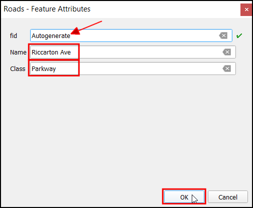
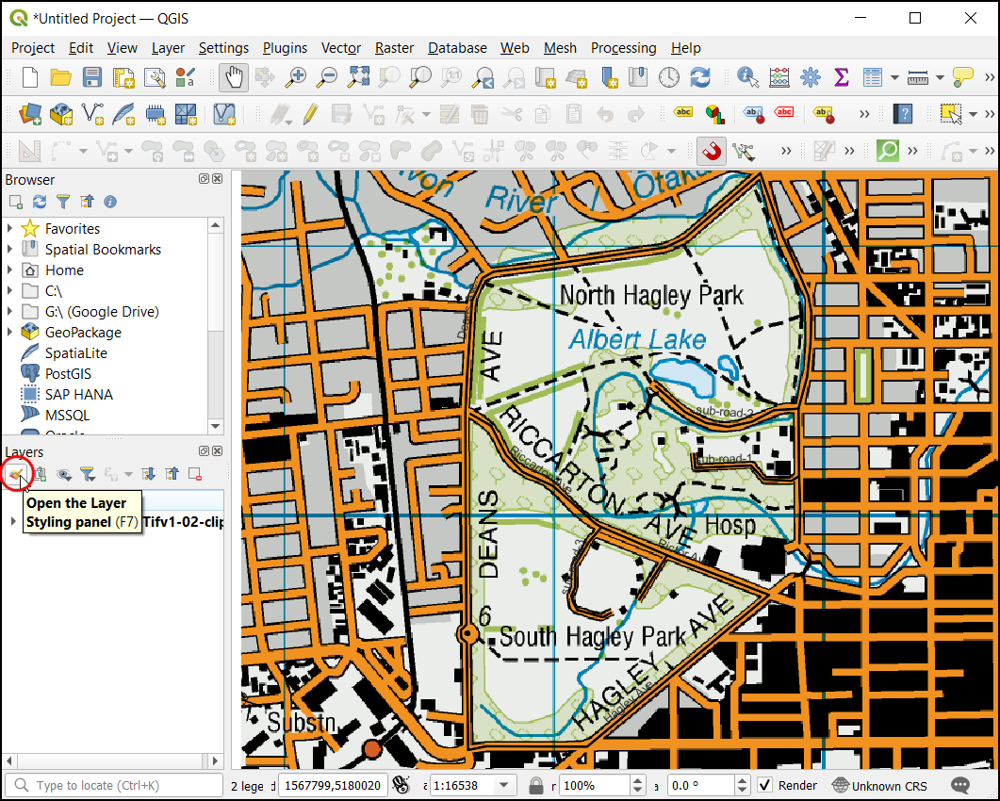
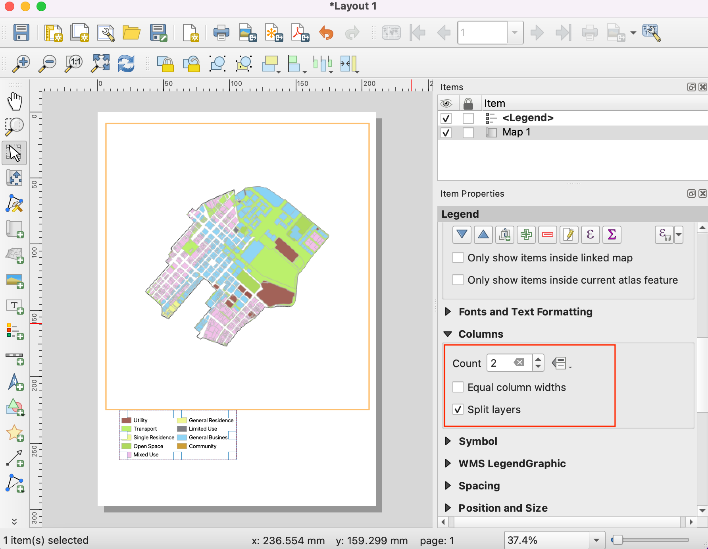
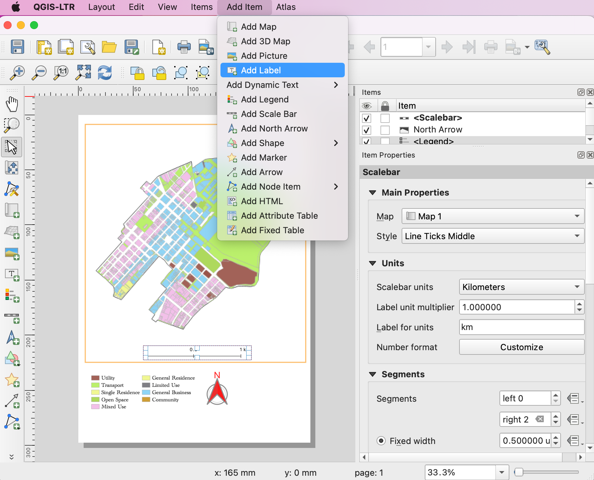

Haciendo un Mapa (QGIS3)¶
A menudo uno necesita crear un mapa que pueda ser impreso o publicado. QGIS tiene una herramienta poderosa llamada Diseño de Impresión quele permite tomar sus capas SIG y empaquetarlas para crear mapas.
Vista general de la tarea¶
Este tutorial muestra cómo crear un mapa de Japón con elementos estándares de mapa como la incrustación de mapa, cuadrículas, flecha de norte, barra de escala y etiquetas.
Otras habilidades que aprenderá¶
Como ver y cambiar Variables de Proyecto QGIS
Cómo usar expresiones QGIS
Obtener los datos¶
Usaremos el conjunto de datos Natural Earth - específicamente el Estuche de Inicio Rápido Natural Earth que viene con capas globales de estilo bello que pueden ser descargadas directamente a QGIS.
Descargue el Kit de Inicio Rápido de Natural Earth. Si el enlace de descarga no funciona, obténgalo directamente de la página Descargas Natural Earth.
Fuente de Datos [NATURALEARTH]
Procedimiento¶
Descargue y extraiga los datos del Estuche de Inicio Rápido Natural Earth. Abra QGIS. Ubique la carpeta
Natural Earth quick starten el panel Navegador. Expanda la carpeta para ubicar el proyectoNatural_Earth_quick_start_for_QGIS_v3. Éste es el archivo de proyecto que contiene capas con estilo en el formato de Documento QGIS. Haga doble-clic en el proyecto para abrirlo.

Podría notar que el mapa tiene etiquetas en griego. Este proyecto usa variables para establecer el idioma. Podemos cambiar las variables yendo a .

Nota
Las variables de proyecto son una manera genial de almacenar valores específicos al proyecto para ser usados donde sea que se pueda usar una expresión en QGIS. El proyecto Natural_Earth_quick_start_for_QGIS_v3 viene con varias variables preestablecidas que son usadas para definir el estilo dentro de ese proyecto.
Pásese a la pestaña Variables en el diálogo Propiedades del Proyecto. Ubique la variable
project_languagey clic en la columna Value para editarla. Cambie el idioma aname_eny clic en Aceptar.

De vuelta en la ventana principal QGIS, clic en el botón Refrescar en la Barra de Herramientas Navegación del Mapa. Verá ahora el mapa representado con etiquetas en inglés.

Use los controles de desplazamiento y acercamiento en la Barra de Herramientas Navegación del Mapa y acérquese a Japón.

Puede deshabilitar algunas capas de mapa para los datos que no necesitamos para este mapa. Expanda la carpeta
z5 - 1:18my desmarque la caja junto a las capasne_10m_geography_marine_polysyne_10m_admin_0_disputed_areas. Antes de que hagamos un mapa apropiado para impresión, necesitamos elegir una proyección apropiada. la SRC predeterminada para el proyecto está definida comoEPSG:3857 Pseudo-Mercator. Esta es una SRC usada popularmente para mapeo web y es una elección decente para nuestro propósito, por lo que podemos dejararla en su valor predeterminado. Vaya a .

Nota
Para Japón, el sistema de coordenada Rectangular Plano Japón es un sistema de referencia de coordenadas (SRC) que está diseñado para distorsiones mínimas. Está dividido en 18 zonas y si está trabajando para una región más pequeña en Japón, será mejor usar este SRC.
Se le pedirá que introduzca un título para el diseño del mapa. Puede dejarlo vacío y hacer clic en Aceptar.

Nota
Dejar vacío el nombre del diseño asignará un nombre predeterminado como Layout 1.
En la ventana Diseño de Impresión, clic el botón Zoom full para mostrar la extensión completa del Diseño.

Ahora tendríamos que traer la vista de mapa que vemos en la pantalla de QGIS al diseño. Vaya a .

Una vez que el modo Añadir Mapa esté activo, presione el botón izquierdo del ratón y arrastre un rectángulo donde quiera insertar el mapa.

Verá que la ventana rectángulo será representada con el mapa de la pantalla principal QGIS. El mapa representado puede que no cubra la extensión completa de nuestra área de interés. Use las opciones y para desplazar el mapa en la ventana y centrarlo en el diseñador.

Ajustemos también el nivel de acercamiento para el mapa. Clic en la pestaña Propiedades de Elemento e ingrese
10000000como el valor de Escala.

Ahora agregaremos una inserción de mapa que muestra una vista acercada al área de Tokio. Antes de que hagamos cambios a las capas en la ventana principal QGIS, marque la casilla de verificación Bloquear capas y Bloquear estilos para capas. Esto asegurará que si desactivamos algunas capas o cambiamos sus estilos, esta vista no cambiará.

Cámbiese a la ventana principal QGIS. Desactive el grupo de capa
z5 - 1:18my active el grupoz7 - 1: 4m. Este grupo de capa tiene estilo que es más apropiado para una vista acercada. Use los controles de desplazamiento y acercamiento en la Barra de Herramienta de Navegación de Mapa y acérquese alrededor de Tokio.

Ahora estamos listos para añadir la inserción de mapa. Cambie a la ventana Diseño de Impresión. Vaya a .

Arrastre un rectángulo en el lugar donde quiere añadir el mapa incrustado. Ahora notará que tenemos 2 objetos de mapa en el Diseño de Impresión. Cuando haga cambios, asegúrese que tiene el mapa correcto seleccionado.

Seleccione el objeto
Mapa 2que recién agregamos del panel Items. Seleccione la pestaña Propiedades de elemento. Deslice hacia abajo del panel Marco y marque la casilla junto a ella. Puede cambiar el color y grosor del borde de marco de manera que sea fácil distinguir respecto al fondo del mapa.

Una funcionalidad fantástica del Diseño de Impresión es que puede resaltar automáticamente el área del mapa principal que está representada en el mapa incrustado. Seleccione el objeto Mapa1` del panel Elementos. En la pestaña Propiedades de elemento, deslízese hacia la sección Vistas generales. Clic en el botón Añadir una nueva vista general.

Seleccione
Mapa 2como el Marco de Mapa. Esto dice al Diseño de Impresión para resaltar el objeto actualMapa 1con la extensión del mapa mostrado en el objetoMapa 2.

Ahora que tenemos el mapa incrustado listo, agregaremos una cuadrícula al mapa principal. Seleccione el objeto
Mapa 1del panel Elementos. En la pestaña Propiedades del elemento, deslízese a la sección Cuadrículas. Clic el botón Añadir una nueva cuadrícula, seguido por Modificar cuadrícula….

De forma predeterminada, las líneas de cuadrícula usan las mismas unidades y proyecciones que las proyecciones de mapa de actualmente seleccionadas. Sin embargo, es más común y útil mostrar líneas de cuadrícula en grados. Podemos seleccionar un SRC diferente para la cuadrícula. Clic en el botón Cambiar… junto a SRC.

En el diálogo Selector de Sistema de Referencia de Coordenadas, ingrese
4326en la caja Filtro. De los resultados, seleccioneWGS84 EPSG:4326como el SRC. Clic en Aceptar.

Seleccione los valores Intervalo como
5grados tanto en la dirección X como en Y. Puede ajustar el :guilabel:Desplazamiento` para cambiar donde aparece las líneas de cuadrícula.

Deslice hacia abajo en la sección Marco de cuadrícula y marque la casilla Dibujar coordenadas. El formato predeterminado es
Gradospero aparece como un número. Podemos personalizarlo para que se adjunte un símbolo °. ElijaPersonalizadoy clic en el botón Expresión junto a él.

Ingrese la siguiente expresión para crear una cadena que toma el número de cuadrícula y la adjunta el símbolo °.
concat(to_string(@grid_number), '° ')
Note que las cuadrículas no tienen una etiqueta personalizada de la expresión. Ajuste la definición de posición para Iqzuierda, Derecha, Arriba y Abajo a su gusto.

Ahora agregaremos un marco Rectangular para retener otros elementos de mapa como la flecha de norte, escala y etiqueta. Vaya a .

Puede cambiar el Estilo del rectángulo para coincidir con el fondo del mapa.

Ahora agregaremos una Flecha de Norte al mapa. QGIS viene con una agradable colección de imágenes relacionadas con mapas - incluyendo muchos tipos de Flechas de Norte. Clic en .

Manteniendo presionado el botón izquierdo del ratón, dibuje un rectángulo. En el panel de la derecha, clic en la pestaña Propiedades del Elemento y expanda la sección Buscar directorios y seleccione la imagen de su gusto.

Ahora agregaremos una barra de escala. Clic en .

Clic en el diseño donde desea que aparezca la barra de escala. En la pestaña Propiedades del Elemento, asegúrese que ha elegido el elemto correcto de mapa
Mapa 1para el que va a mostrar la barra de escala. Elija el Estilo que se ajuste a su requerimiento. En el panel Segmentos, cambie el Ancho fijado a200y ajuste los segmentos a su gusto.

Es momento de etiquetar nuestro mapa. Clic en .

Clic en el mapa y dibuje una caja donde debería estar la etiqueta. En la pestaña Propiedades del Elemento, expanda la sección Etiqueta e ingrese una etiqueta para el mapa. De forma similar agregue otras etiquetas para créditos de datos y software.

Una vez que esté satisfecho con el mapa, puede exportarlo como una Imagen, PDF, o SVG. Para este tutorial, exportémoslo como una imagen. Clic en .

Guarde la imagen en el formato de su gusto. Abajo está la imagen PNG exportada.